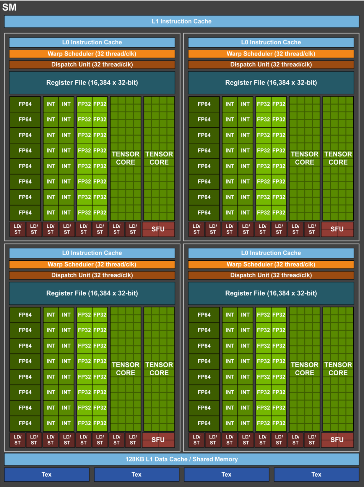
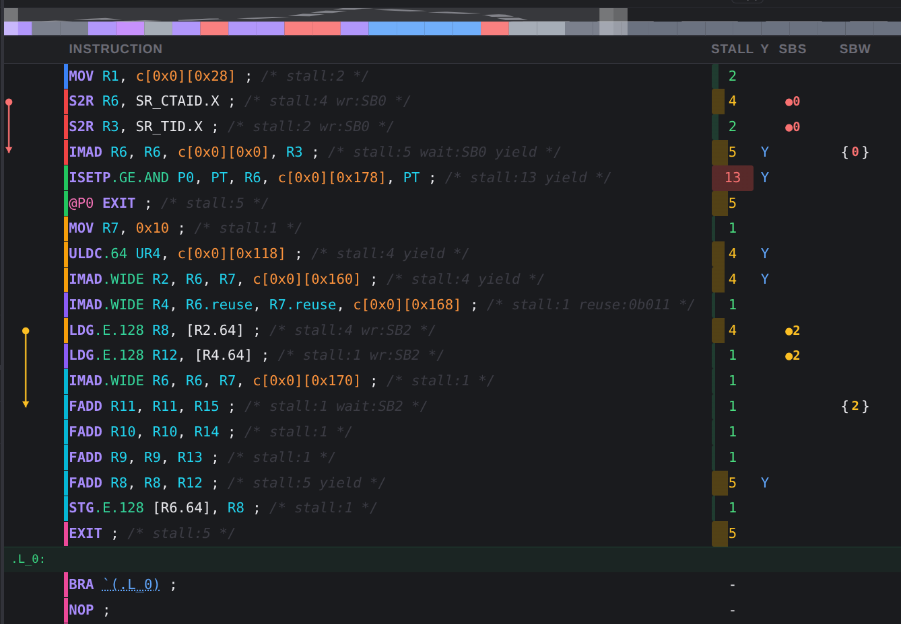
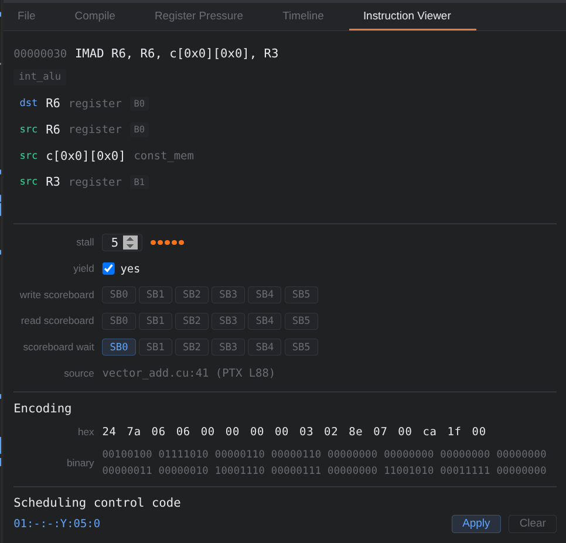

CUDA Instruction Encoding: Why SASS Carries Scheduling Metadata
Table of Contents
TL;DR
- CPU out-of-order cores solve dependencies dynamically in hardware every cycle.
- NVIDIA GPUs push much of per-instruction dependency timing into compiler-generated metadata.
- In disassembly tools, this often appears as control information like wait masks, barrier indices, stall counts, yield hints, and reuse flags.
- The exact bit layout is architecture-dependent, but the mental model is stable: compiler pre-annotates hazards, warp scheduler executes cheaply.
Why This Topic Matters
When a kernel underperforms, we usually look at occupancy, memory coalescing, or instruction mix. But one layer lower, instruction encoding itself influences how efficiently the SM can issue instructions from each warp.
If you understand what these control fields mean, you can read SASS listings as a performance story:
- where latency is expected,
- where a warp intentionally yields,
- where barriers protect correctness,
- and where register reuse tries to save RF bandwidth.
CPU Baseline: Dynamic Scheduling Hardware
To see why GPU instruction encoding exists, we need a stronger CPU baseline first.
Modern CPU cores are built for irregular, branch-heavy, pointer-heavy programs where the compiler cannot reliably predict runtime behavior. So CPUs do dependency management in hardware, every cycle.
CPU Instruction Execution
Once a program is compiled down to machine code, the CPU sees a flat stream of binary-encoded instructions:
ADD r1, r2, r3 ; r1 = r2 + r3
SUB r4, r1, r5 ; r4 = r1 - r5 (depends on the ADD above)
LOAD r6, [r7+0x10] ; r6 = memory[r7 + 16]
Each instruction passes through four stages before producing a result:
Fetch → Decode → Issue → Execute
The CPU must move instructions through this pipeline as fast as possible — ideally one (or more) per cycle. The challenge is that instructions are not independent: SUB above cannot execute until ADD writes r1. The CPU has to detect and handle such dependencies on the fly, every cycle, without stalling unnecessarily.
Fetch
The front-end reads instruction bytes from the instruction cache, driven by the program counter. A branch predictor speculatively predicts the direction of branches so the front-end can keep fetching ahead without stalling on every conditional jump. Mispredictions are corrected later at a cost of flushing the pipeline.
Decode
The decoder breaks each instruction’s binary encoding into its component parts: the opcode (what operation to perform) and the operands (registers, immediates, memory addresses). A typical ISA encoding looks like:
+---------+----------+----------+----------------+
| Opcode | Dest Reg | Src Regs | Extra info |
+---------+----------+----------+----------------+
“Extra info” can be another register, an immediate constant, a memory displacement, an addressing mode, a shift amount, etc. The opcode is the only part that tells the CPU what to do; everything else describes the data.
As a simple example, say opcodes and register IDs are each 4 bits wide:
0001 = ADD 0110 = SUB 0011 = LOAD
Then ADD r1, r2, r3 encodes as:
0001 0001 0010 0011
ADD r1 r2 r3
The decoder extracts opcode=0001 → ADD, dst=r1, src1=r2, src2=r3. Notice what is not in this encoding: any information about when this instruction can safely issue. The CPU must figure that out at runtime.
At decode time, most modern out-of-order cores also perform register renaming: the architectural register names in the instruction (e.g. r1, r2) are mapped to a larger pool of physical registers. This eliminates false dependencies (WAW/WAR hazards) that would otherwise serialize independent operations.
Issue and Execute
After decode, instructions do not execute immediately. They are placed into reservation stations (or an issue queue), where they wait until all their source operands are available. The CPU monitors every in-flight instruction each cycle and issues one as soon as its inputs are ready, regardless of program order — this is out-of-order execution.
Supporting machinery includes:
- Reorder Buffer (ROB): holds speculative results and retires instructions in program order, ensuring precise exceptions.
- Load-Store Queue (LSQ): speculatively orders memory operations and replays on alias conflicts.
- Branch predictor: keeps the front-end fed across control flow.
In other words, CPUs solve this question dynamically in hardware, every cycle, for every in-flight instruction:
“Can instruction $I_n$ issue right now without breaking correctness?”
Why CPU compilers cannot fully pre-encode this
Because runtime reality is unknown at compile time:
- cache hits vs DRAM misses,
- branch direction,
- pointer aliasing,
- inter-core interference,
- TLB behavior.
A linked-list traversal can swing from L1 to DRAM latency unpredictably, so static cycle-accurate scheduling would be wrong frequently.
Cost of this flexibility
CPU out-of-order logic gives superb single-thread adaptability, but it costs:
- substantial area for queues/tables,
- high dynamic power from dependency checks and wakeup/select logic,
- pipeline complexity that scales poorly when you try to run thousands of threads.
That last point is key for GPU comparison: what works for a handful of aggressive CPU threads does not map directly to massively threaded SIMT execution.
CPU vs GPU tradeoff summary
| Dimension | CPU (OOO Core) | GPU (SM / Warp Execution) |
|---|---|---|
| Primary target | Low-latency single-thread progress | High-throughput many-thread progress |
| Dependency handling | Dynamic, hardware-heavy | Compiler-guided + lightweight hardware checks |
| Control-flow handling | Deep speculation | Limited speculation; switch to other warps |
| Latency strategy | Find ILP in one thread | Combine ILP + TLP across many warps |
| Hardware budget | Complex per-core control | Simpler per-warp issue control, more arithmetic lanes |
This is exactly why GPUs choose to push more scheduling intent into instruction metadata.
GPU Perspective: Compiler-Assisted Issue Control
For modern NVIDIA architectures, the compiler/assembler provides scheduling metadata alongside each instruction stream so hardware does less dynamic dependency bookkeeping. The compiler has a global view, it sees the entire program, knows every instruction’s latency, and can solve the scheduling problem once at compile time. Hardware scoreboard logic has only a local view (what’s currently in flight) and must solve it again at runtime for every instruction on every warp. Moving this work to the compiler:
- Saves silicon area : no scoreboard SRAM, no complex dependency-checking logic per SM
- Saves power : smaller hardware logic = fewer switching transitions
- Saves cycles : the hardware can issue immediately without any stall-detection pipeline stage
- Scales cleanly : as you add more SMs to the chip, you don’t need proportionally more scoreboard hardware
- Keeps the hardware simple
This section explains everything in Volta architecture for simplicity, but the same principles apply to later generations as well. The exact bit layout of the control metadata differs by generation, but the mental model is stable: compiler pre-annotates hazards, warp scheduler executes cheaply.
Kernel Execution Architecture
When a CUDA kernel launches, it creates a grid of thread blocks. The GPU runtime distributes those blocks across the available Streaming Multiprocessors (SMs) on the chip. Each SM works on its assigned blocks independently and concurrently.
Inside an SM, threads are not managed individually. They are grouped into warps of 32 threads that execute in lockstep — this is the SIMT model. Every thread in a warp executes the same instruction at the same time, on 32 separate data lanes. An SM can hold many warps resident simultaneously (up to 64 in Volta), far more than it can run in any single cycle. This over-subscription is deliberate: when one warp is stalled waiting on memory, the SM switches to another warp that is ready, hiding latency without any OS-level context switch overhead.

Warp Instruction Execution
Each SM contains two distinct components that work together to keep the execution units busy: the warp scheduler and the dispatch unit. Understanding their roles separately makes the control metadata story much clearer.
Warp Scheduler
The warp scheduler’s job is to decide which warp gets to issue its next instruction in a given cycle. In Volta GV100, each SM has 4 warp schedulers, each managing a subset of the resident warps. Every cycle, each scheduler looks across its pool of warps and picks one that is ready to issue — one that has no outstanding dependencies and no required wait.
The key question the scheduler asks every cycle is: “Is this warp eligible to issue right now?” As we’ll see shortly, the answer comes directly from metadata encoded alongside each instruction, making this check cheap.
Dispatch Unit
Once the scheduler selects a warp and confirms eligibility, the dispatch unit takes over. Its job is narrower: route the instruction to the correct execution unit.
The SM has several execution pipelines — integer ALU, FP32 CUDA cores, FP64 units, load/store units (LD/ST), special function units (SFU), and so on. The dispatch unit reads the opcode (which the scheduler did not need), determines the target pipeline, and sends the instruction there. In Volta, each warp scheduler is paired with a dispatch unit that can issue one instruction per cycle from the chosen warp.
Resident Warps (pool)
│
▼
┌──────────────────────┐
│ Warp Scheduler │ ← reads control bits to check eligibility
│ (which warp, when?) │ picks one eligible warp per cycle
└──────────┬───────────┘
│ selected warp + instruction
▼
┌──────────────────────┐
│ Dispatch Unit │ ← reads opcode to route the instruction
│ (which pipeline?) │ sends to INT / FP32 / FP64 / LD-ST / SFU
└──────────┬───────────┘
│
┌──────────┴──────────────────────────┐
│ │
FP32 Cores LD/ST Units FP64 Units SFU ...
The key insight is the division of responsibility:
- The scheduler uses the control bits to decide when a warp is ready.
- The dispatcher uses the opcode to decide where the instruction goes.
This is why each instruction carries both:
- the opcode is for correctness and routing,
- the control metadata is for issue timing.
Together they form a complete instruction description.
GPU Instruction Encoding with Control Metadata
Recall the CPU instruction encoding from earlier — it carries only opcode and operands. There is no timing information because the CPU resolves dependencies dynamically at runtime.
GPU instructions extend this layout with an explicit control field:
+---------+----------+----------+----------+-------------+
| Opcode | Dest Reg | Src Regs | Modifiers| Control bits|
+---------+----------+----------+----------+-------------+
The control bits are the compiler’s pre-computed answer to the question the CPU would solve in hardware every cycle: “Is this instruction ready to issue?” They tell the scheduler exactly how long to wait, which barriers to check, and whether to yield — before the opcode is even considered. The next section breaks down exactly what those bits encode.
Anatomy of Control Code (Volta)
In Volta and later architectures, the control code is a 21-bit field that encodes:
+-------------+----------+----------+----------+----------+----------+-------------+
| Width(bits) | 4 bits | 6 bits | 3 bits | 3 bits | 1 bit | 4 bits |
+-------------+----------+----------+----------+----------+----------+-------------+
| Meaning | Reuse | Wait | Read | Write | Yield | Stall |
| | Flags | Barrier | Barrier | Barrier | Flag | Cycles |
| | | Mask | Index | Index | | |
+-------------+----------+----------+----------+----------+----------+-------------+
Reference: Dissecting the NVIDIA Volta GPU Architecture via Microbenchmarking (https://arxiv.org/abs/1804.06826)
Stall Cycles (4 bits)
For instructions with fixed, known latency — integer arithmetic, FP math, shared memory — the compiler knows exactly how many cycles to wait before the result is ready. It encodes that count directly in this field.
Stall = 0 → issue next instruction back-to-back (no gap)
Stall = 6 → wait 6 cycles (e.g. after an FFMA)
Stall = 15 → wait 15 cycles (maximum encodable gap)
If the actual latency exceeds 15 cycles, the compiler splits the wait: it sets stall to 15 and also assigns a write barrier (see below) so the scheduler can wait for completion via barrier clearing rather than a fixed count.
Yield Flag (1 bit)
When set, this bit hints to the scheduler that the issuing warp should voluntarily de-prioritize itself after this instruction, giving other eligible warps a chance to run. It is a hint, not a command, the scheduler may ignore it if no other warps are ready. Typically set after issuing a long-latency operation, where the warp will be waiting anyway.
Read Barrier Index + Write Barrier Index (3 bits each)
For variable-latency instructions — global memory loads, texture fetches, atomics — the compiler cannot predict an exact cycle count at compile time. Latency depends on cache state, DRAM contention, and other runtime factors. Stall count alone is not enough.
Instead, the compiler assigns these instructions a named barrier slot (0–5). Each warp has 6 such slots, acting as lightweight “pending” flags:
Per-warp barrier slots:
┌───┬───┬───┬───┬───┬───┐
│ 0 │ 1 │ 2 │ 3 │ 4 │ 5 │
└───┴───┴───┴───┴───┴───┘
↑
LDG issued → slot 0 marked busy
...
...
LDG completes → slot 0 cleared
- The write barrier index on the producer (e.g.
LDG) marks which slot to busy when the instruction is issued. - The read barrier index on the consumer marks which slot must be clear before that instruction can read the result.
This lets the SM track long-latency completions with just 6 bits of per-warp state, rather than a full dynamic scoreboard across all in-flight registers.
Wait on Barrier Mask (6 bits)
A bitmask — one bit per barrier slot — specifying which slots this instruction must wait for before issuing. If bit 0 is set, the instruction will not issue until slot 0 has cleared. Multiple bits can be set when an instruction depends on the results of several in-flight operations.
Wait mask = 0b000001 → wait for slot 0 only
Wait mask = 0b000011 → wait for slots 0 and 1
Wait mask = 0b000000 → no barrier wait (issue freely)
Reuse Cache Flags (4 bits)
Register file reads are expensive in power and can cause bank conflicts. When this bit is set for an operand, the SM keeps a cached copy of that source register in a small per-warp reuse buffer. Subsequent instructions that reference the same operand read from the cache instead of the main register file.
Each bit maps to one of the instruction’s source operand slots. This is most effective in tight inner loops where the same value is used repeatedly across consecutive instructions.
The exact bit layout and number of barrier slots differ by architecture generation (Kepler/Maxwell/Pascal encode control differently; Volta/Turing/Ampere/Hopper share the model described here). The dependency-management idea — stalls for fixed latency, barriers for variable latency — is consistent across all of them.
How the scheduler uses this metadata
At issue time, the warp scheduler reads the control code before looking at the opcode. The sequence is roughly:
- Check the wait-on-barrier mask, if any set bit corresponds to an outstanding barrier that hasn’t cleared yet, stall the warp.
- If clear, decrement the stall count counter and wait that many cycles.
- Issue the instruction. Tag its output to the write barrier index if one is specified.
- If the yield bit is set, deprioritize this warp and let another warp go next.
- When a long-latency instruction completes (e.g. a global memory load returns), its barrier slot is cleared, which unblocks any warp waiting on that barrier via the wait mask.
The result is that the warp scheduler becomes almost trivially simple — it’s just checking a few bits rather than maintaining a full scoreboard matrix tracking every in-flight register across all active warps.
Control Code walkthrough (Ampere)
To make this more concrete, let’s look at the disassmebly of a vector addition kernel and how the control metadata of the instructions affects instruction issue. I am using screenshots from awesome GPUASM to get the encoded SASS instructions and control code visualization. The kernel disassembly is shown for sm86(Ampere) architecture and the control code metadata is visible in the disassembly.
Vector Addition Kernel Instructions
The kernel adds two float arrays element-wise and stores the result in a third array. The kernel is optimized to process four floats per thread using float4 types, which allows for vectorized loads and stores.
// CUDA Kernel: vector add of two float arrays
// ---------------------------------------------------------------------------
// Optimized: four floats per thread via float4, vectorized loads/stores
// SASS: LDG.E.128 R4, [R4+0x0] (16 bytes per load — 4x throughput)
// STG.E.128 [R6], R4 (16 bytes per store)
// 4 independent FADDs (ILP hides memory latency)
// ---------------------------------------------------------------------------
__global__ void vectorAdd_vec4(const float4* A, const float4* B, float4* C, int N4) {
int i = blockIdx.x * blockDim.x + threadIdx.x;
if (i < N4) {
float4 a = A[i];
float4 b = B[i];
C[i] = make_float4(a.x + b.x, a.y + b.y, a.z + b.z, a.w + b.w);
}
}
The corresponding SASS instructions show the control metadata for each instruction, which governs how the warp scheduler issues them. The encoded instructions for this vector addition kernel are shown below:

The interesting part is not only the opcode sequence, but the hidden/adjacent control metadata that governs when dependent instructions can issue.
In the visualization above, read each row in two parts:
- the instruction text on the left tells you what operation the warp wants to execute,
- the control columns on the right tell you when the scheduler is allowed to issue it.
That makes the screenshot useful as a timing diagram, not just a disassembly listing. The colored dependency arrows highlight where one instruction must wait for an earlier result, while the right-side fields show how that wait is enforced: either by a fixed stall count or by a scoreboard/barrier dependency.
Decoding the control code for one instruction: IMAD
Let’s take a closer look at one instruction before trying to understand the complete kernel control flow. The IMAD instruction computes the flattened thread index for the vector addition kernel:

The control code of this instruction is:
wait_mask : read_barrier : write_barrier : yield : stall : reuse_flags
01 : - : - : Y : 05 : 0
| Field | Value | Meaning |
|---|---|---|
| wait_mask | 01 |
Wait on dependency slot 0 (SB0) before issue, since this instruction depends on a previous instruction that wrote to that slot |
| read_barrier | - |
No read barrier assigned |
| write_barrier | - |
No write barrier assigned |
| yield | Y |
Scheduler may prefer other warps after issue, since this instruction waits on a dependency |
| stall | 05 |
This warp waits at least 5 cycles before next issue |
| reuse_flags | 0 |
No reuse flags set for this instruction |
In the screenshot, this is exactly what the red dependency arrow is showing: the IMAD cannot issue immediately because it needs the values produced by the earlier S2R instructions. Those S2R instructions write scoreboard slot 0, and IMAD carries a wait mask of 01, so the scheduler holds this warp until slot 0 clears. Once IMAD does issue, the encoded stall of 5 cycles covers the fixed ALU latency before the next dependent instruction can safely consume R6.
Decoding the control code for the kernel
Now, lets look at the full kernel instruction stream and how the control code shapes the warp’s execution timeline.
The kernel instruction stream naturally breaks into four phases.
1. Thread-index setup: S2R → IMAD → ISETP
// int i = blockIdx.x * blockDim.x + threadIdx.x;
01:-:-:Y:5:0 IMAD R6, R6, c[0x0][0x0], R3 ;
--:-:-:-:2:0 MOV R1, c[0x0][0x28] ; // Load blockDim.x-related launch constant from constant memory
--:-:0:-:4:0 S2R R6, SR_CTAID.X ; // Read blockIdx.x into R6 and tag scoreboard slot 0
--:-:0:-:2:0 S2R R3, SR_TID.X ; // Read threadIdx.x into R3 and also use scoreboard slot 0
01:-:-:Y:5:0 IMAD R6, R6, c[0x0][0x0], R3 ; // Wait on slot 0, then compute i = blockIdx.x * blockDim.x + threadIdx.x
// if (i < N4)
--:-:-:Y:13:0 ISETP.GE.AND P0, PT, R6, c[0x0][0x178], PT ; // Compare i against N4 and write predicate P0
--:-:-:-:5:0 @P0 EXIT ; // If i >= N4, exit this thread early
The first visible dependency chain is the one marked by the upper red arrow in the screenshot.
S2R R6, SR_CTAID.XreadsblockIdx.x.S2R R3, SR_TID.XreadsthreadIdx.x.- Both write scoreboard slot 0.
IMAD R6, R6, c[0x0][0x0], R3computes the flattened thread index and therefore cannot issue until those special-register reads complete.
That is why IMAD carries 01:-:-:Y:5:0, which waits until scoreboard slot 0 clears.
The next instruction, ISETP.GE.AND, depends on the newly computed R6. Here the compiler does not need another wait mask because this is a fixed-latency integer dependency; the IMAD stall already spaces the stream correctly. In the visualization, the large red 13-cycle stall on ISETP then gives the predicate result P0 enough time to become usable by the predicated @P0 EXIT.
So the first lesson from the image is:
long unpredictable memory dependencies are usually handled with scoreboard waits, while short, predictable ALU dependencies are usually handled with explicit stall counts.
2. Address generation: MOV / IMAD.WIDE / reuse
--:-:-:-:1:0 MOV R7, 0x10 ; // Element stride = 16 bytes for one float4
--:-:-:Y:4:0 ULDC.64 UR4, c[0x0][0x118] ; // Load a 64-bit uniform constant/base pointer
--:-:-:Y:4:0 IMAD.WIDE R2, R6, R7, c[0x0][0x160] ; // Form byte address of A[i]
--:-:-:-:1:3 IMAD.WIDE R4, R6.reuse, R7.reuse, c[0x0][0x168] ; // Form byte address of B[i] and reuse R6/R7 from the operand cache
After the bounds check, the kernel builds three addresses:
R2forA[i],R4forB[i],R6forC[i].
This part is mostly fixed-latency integer math, so the compiler packs it tightly with small stall values (1 or 4). The interesting detail in the screenshot is:
--:-:-:-:1:3 IMAD.WIDE R4, R6.reuse, R7.reuse, c[0x0][0x168] ;
The .reuse annotations and reuse flag 3 tell the hardware to keep the recently used R6 and R7 operands in the reuse buffer instead of re-reading them from the register file. In other words, even before we reach the memory operations, the control metadata is already shaping timing and power behavior.
3. Memory phase: LDG writes a scoreboard slot, first FADD waits on it
--:-:2:-:4:0 LDG.E.128 R8, [R2.64] ; // Launch 128-bit load for A[i], mark scoreboard slot 2 busy
--:-:2:-:1:0 LDG.E.128 R12, [R4.64] ; // Launch 128-bit load for B[i], also tracked through slot 2
--:-:-:-:1:0 IMAD.WIDE R6, R6, R7, c[0x0][0x170] ; // In parallel, form byte address of C[i]
04:-:-:-:1:0 FADD R11, R11, R15 ; // Wait on slot 2, then add one lane after load data returns
The most important dependency transition in the image is the one marked by the lower yellow arrow.
Here the two vector loads are different from the earlier IMAD instructions:
- global-memory latency is variable, not fixed,
- so the compiler cannot predict the exact cycle when data will return,
- therefore it assigns the loads to scoreboard slot 2.
That is what the 2 field on both LDG.E.128 instructions is doing: when the loads issue, slot 2 becomes busy. The first arithmetic consumer, FADD R11, R11, R15, carries a wait mask of 04, which means do not issue until slot 2 clears.
This is the key timing difference between ALU and memory dependencies:
IMAD→ISETPwas delayed by a known, fixed stall.LDG→FADDis delayed by a scoreboard wait because the load may return from L1, L2, or DRAM.
In the visualization, the yellow dependency arrow makes that handoff easy to see: the warp enters a memory phase, then the arithmetic phase resumes only when the scoreboard says the data is back.
4. Arithmetic + store: independent FADDs, then one final stall before STG
Once the load dependency clears, the math section flows almost ideally:
04:-:-:-:1:0 FADD R11, R11, R15 ; // Add lane 3 of the float4 result
--:-:-:-:1:0 FADD R10, R10, R14 ; // Add lane 2 of the float4 result
--:-:-:-:1:0 FADD R9, R9, R13 ; // Add lane 1 of the float4 result
--:-:-:Y:5:0 FADD R8, R8, R12 ; // Add lane 0, then stall long enough for the full vector result to be ready
--:-:-:-:1:0 STG.E.128 [R6.64], R8 ; // Store the 16-byte float4 result to C[i]
These four FADDs operate on separate lanes of the float4, so after the initial wait they can issue with minimal spacing. The last FADD is the one that matters most for the store because STG.E.128 [R6.64], R8 consumes the full vector result starting at R8. The compiler therefore puts a 5-cycle stall on that last FADD, which gives the floating-point result time to become ready before the store tries to read it.
This is why the store does not need its own explicit wait mask in this snippet: the fixed-latency arithmetic result is already covered by the encoded stall on the final producer.
Summary of the kernel instruction timing
If you translate the screenshot into a scheduler timeline, the warp progresses like this:
- Read special registers for block/thread identity.
- Wait on scoreboard slot 0, then issue
IMADto computei. - Burn fixed stall cycles so
ISETPcan safely readR6and@P0 EXITcan safely readP0. - Generate addresses for
A[i],B[i], andC[i]with tightly packed integer instructions. - Issue two global loads and mark scoreboard slot 2 busy.
- Leave this warp idle or yield it while memory is outstanding.
- Resume only when slot 2 clears, then run the four
FADDs. - Wait for the last
FADDresult, then issue the vector store.
That is exactly the behavior the visualization is capturing: the warp does not simply execute instructions top to bottom at one instruction per cycle. It alternates between:
- fixed-latency spacing (
STALL), and - event-driven waiting on long-latency operations (scoreboard/barrier fields).
Once you read the image this way, the control code stops looking like mysterious punctuation and starts reading like a compact performance trace for the warp.
How Instruction Encoding Affects Kernel Performance
Instruction encoding affects performance because it controls issue timing, not just correctness. In practice, the metadata decides whether a warp keeps feeding pipelines or creates bubbles.
Stall count controls per-warp bubble depth
- Too conservative stall values can under-issue and waste cycles.
- Too aggressive values can force hardware to block/replay dependent instructions.
For short ALU chains, good stall tuning keeps near back-to-back issue. For memory-heavy code, stall alone is not enough and barrier waits become critical.
Wait/read/write barrier choices shape long-latency overlap
- Correct barrier placement lets independent instructions run while a load is in flight.
- Poor grouping can serialize work that could have overlapped.
- Reusing barrier slots too aggressively can create avoidable waits.
In memory-bound kernels, this is often the difference between “latency hidden” and “scheduler idle”.
Yield hint influences fairness vs locality
- Yielding at the right points can improve warp-level fairness and hide latency.
- Over-yielding can reduce locality and hurt tight ILP-heavy sections.
Think of yield as a scheduler hint, not a magic speed-up flag.
Reuse flags reduce register-file pressure and bank conflicts
- Proper reuse can lower operand fetch traffic from the main register file.
- That helps power and can improve sustained issue in RF-stressed loops.
This is subtle but measurable in hot inner loops with repeated source operands.
Encoding interacts with occupancy and instruction mix
Encoding is not isolated. Its impact depends on:
- how many warps are resident (occupancy),
- whether the kernel is ALU-bound, memory-bound, or control-flow-bound,
- ILP available within each warp.
Low occupancy amplifies bad scheduling metadata because there are fewer alternative warps to run while one warp waits.
Quick vector-add intuition
- In vector add, two global loads dominate latency. Good encoding lets the warp scheduler quickly rotate to other warps after issuing loads and return when dependencies clear.
- Bad wait/stall choices can leave visible issue gaps even though arithmetic is trivial.
That’s why instruction encoding is directly tied to achieved throughput, IPC, and stall reasons you see in profilers.
What You Miss If You Only Read PTX
PTX tells you what operations happen. SASS + control metadata tells you when operations can happen.
That timing layer explains many profiler surprises:
- why an instruction with low nominal latency still causes bubbles,
- why two kernels with similar PTX can diverge in achieved IPC,
- why changing one source line can reshuffle barrier usage and stall pattern.
Profiler Mapping: What to Look For
If instruction encoding is hurting a kernel, the symptoms appear as issue inefficiency and wait-heavy stall breakdowns.
Nsight Compute (primary tool)
Focus on four groups:
-
Scheduler / issue efficiency
- Look for low issue efficiency (e.g., many cycles where no eligible warp is issued).
- Interpretation: stalls/waits are not being hidden well across resident warps.
-
Warp stall breakdown
- Watch for dominant long-scoreboard / dependency-style stalls (naming varies by architecture/tool version).
- Interpretation: wait/barrier decisions around memory or dependent chains are limiting forward progress.
-
Memory latency and throughput context
- Correlate scoreboard stalls with global memory latency and cache behavior.
- Interpretation: if memory latency is high and occupancy/ILP is low, conservative scheduling metadata hurts more.
-
IPC / instruction throughput
- Compare achieved instruction throughput against theoretical or expected behavior for the instruction mix.
- Interpretation: if throughput is low despite simple math, issue timing (stall/wait/yield behavior) is often a contributor.
Nsight Systems (timeline-level validation)
Use Nsight Systems to answer:
- Is the kernel itself the bottleneck, or are launches/memcpy/synchronization dominating?
- Are kernel durations and gaps consistent with the stall-heavy story from Nsight Compute?
Nsight Systems will not decode per-instruction barriers, but it validates whether micro-level stalls translate into macro-level timeline inefficiency.
Practical diagnosis flow
- Spot a slow kernel in Nsight Systems.
- Open that kernel in Nsight Compute and check scheduler + stall breakdown.
- Inspect SASS/control metadata (GPUASM or
nvdisasm) around hot basic blocks. - Modify code shape (unroll, dependency chain length, memory pattern), rebuild, and re-profile.
- Keep changes that reduce dependency-heavy stalls while preserving occupancy and correctness.
Common Pitfalls
- Do not assume one fixed encoding format across all GPU generations.
- Do not over-interpret exact cycle counts from one architecture/toolchain as universal.
- Not every hazard is represented the same way (some are structural or pipeline-specific).
- Disassembler notation is a lens, not the hardware RTL. It is still extremely useful for optimization.
Key Takeaways
- Instruction encoding on NVIDIA GPUs is not just opcodes; it also carries scheduling/dependency intent.
- The compiler does substantial pre-work so hardware can issue warps with lower dynamic complexity.
- Vector add is small, but it already shows wait/stall/barrier behavior clearly.
- If you want to optimize deeply, learn to read PTX + SASS + control metadata together.
In the next post, I’ll connect this to register mapping and occupancy pressure so we can reason about why seemingly minor code changes shift performance.
Read More
- Out of Order Execution in CPU https://youtu.be/jNC9LPc3BI0
- Dissecting the NVIDIA Volta GPU Architecture via Microbenchmarking https://arxiv.org/abs/1804.06826
Next: